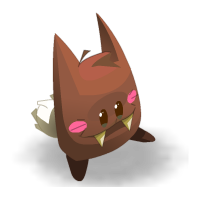

Application de Nourrissage de Familiers

Ici on va faire la page :3
Youpiiiii :D , c'est parti !
Ajouter
{{afficherMinimumProchainRepas(familier.type, familier.heureDernierRepas)}}
{{afficherMaximumProchainRepas(familier.type, familier.heureDernierRepas)}}
delete